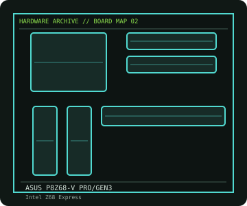

[ INDIVIDUAL COMPONENT // MOTHERBOARDS ]
ASUS P8Z68-V PRO/GEN3
LGA1155 Z68 ATX board with DDR3, PCIe Gen 3 graphics support, SATA 6 Gb/s and UEFI firmware. This entry identifies one product model; revision and firmware qualifications are stated below.

IDENTIFICATION: Check the PCB silkscreen, printed revision, assembly code, and firmware identifier on the actual board. Similar model names and PCB revisions may use different specifications or firmware.
Specifications
| Catalog subcategory | Enthusiast Intel platforms |
|---|---|
| Exact board / model | ASUS P8Z68-V PRO/GEN3 |
| Era / platform | Intel Sandy Bridge / Ivy Bridge enthusiast desktop board, 2011 |
| CPU and socket | Intel LGA1155 Core i7/i5/i3, Pentium and Celeron processors from supported generations; Ivy Bridge support depends on a compatible BIOS |
| Chipset / controller | Intel Z68 Express |
| Memory | Four DDR3 DIMM slots, dual-channel, up to 32 GB; supported speeds depend on CPU and memory profile |
| Expansion and connectivity | ATX; three PCIe x16-length slots (lane sharing depends on CPU/card population), two PCIe x1 and two legacy PCI; Intel SATA 6 Gb/s and 3 Gb/s ports, USB 3.0, Gigabit Ethernet and analog/digital audio |
| Firmware | ASUS UEFI BIOS with board-specific BIOS updates; verify minimum BIOS for Ivy Bridge and any PCIe 3.0 CPU before installation. |
Compatibility and revision notes
The GEN3 suffix identifies this revision of the P8Z68-V PRO family; do not use a plain P8Z68-V PRO BIOS. PCIe 3.0 capability requires a compatible Ivy Bridge CPU and suitable card/slot configuration.
Physical socket fit alone does not establish compatibility. Verify the exact processor support list, minimum BIOS, memory population rules, case dimensions, power connectors and shared-lane behavior in the cited model documentation before installation.
Preservation and repair
Inspect LGA1155 socket pins under magnification, the Z68 chipset heatsink and VRM area, and the board's CMOS battery. Confirm the case front-panel pinout from the manual; save the UEFI profile before updates and use stable power during flashing.
For an archive record, photograph the PCB and labels before cleaning; note serial/date codes, BIOS/BMC versions, accessories, known faults, repairs, and test conditions. Use ESD-safe handling and never apply power with loose conductive hardware beneath the board.
Sources & further reading
- ASUS — P8Z68-V PRO/GEN3 technical specificationsManufacturer specifications for this exact GEN3 model.
- ASUS — P8Z68-V PRO/GEN3 support and manualsModel-specific manual, BIOS and support files.
Manufacturer model documentation is the primary reference; confirm the document revision and board markings when specifications vary by revision or SKU.